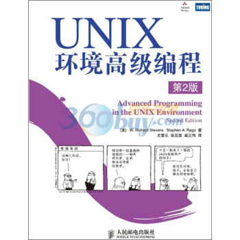
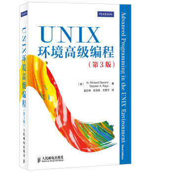

<!DOCTYPE html>
<html lang=en>
<head>
    <meta charset="utf-8">
    
    <title>Trusted Cloud Group</title>
    <meta name="viewport" content="width=device-width, initial-scale=1, maximum-scale=1" />
    <meta name="description" content="Publications  Conferences  2017      Yaozu Dong, Jianguo Yao, Haibing Guan, R. Ananth Krishna, Yunhong Jiang, MobiXen: Porting Xen on Android devices for mobile virtualization. DATE 2017: 946-949">
<meta property="og:type" content="website">
<meta property="og:title" content="Trusted Cloud Group">
<meta property="og:url" content="http://tcloud.sjtu.edu.cn/publications/index.html">
<meta property="og:site_name" content="Trusted Cloud Group">
<meta property="og:description" content="Publications  Conferences  2017      Yaozu Dong, Jianguo Yao, Haibing Guan, R. Ananth Krishna, Yunhong Jiang, MobiXen: Porting Xen on Android devices for mobile virtualization. DATE 2017: 946-949">
<meta property="og:locale" content="en_US">
<meta property="og:image" content="http://tcloud.sjtu.edu.cn/publications/NewBluePill.jpg">
<meta property="og:image" content="http://tcloud.sjtu.edu.cn/publications/GIS.jpg">
<meta property="og:image" content="http://tcloud.sjtu.edu.cn/publications/Unix2.jpg">
<meta property="og:image" content="http://tcloud.sjtu.edu.cn/publications/Unix3.jpg">
<meta property="article:published_time" content="2022-09-06T07:55:40.484Z">
<meta property="article:modified_time" content="2022-09-06T07:55:40.484Z">
<meta property="article:author" content="Trusted Cloud Group">
<meta name="twitter:card" content="summary">
<meta name="twitter:image" content="http://tcloud.sjtu.edu.cn/publications/NewBluePill.jpg">
    

    

    
        <link rel="icon" href="/css/images/avatar2.png" />
    

    
<link rel="stylesheet" href="/vendor/font-awesome/css/font-awesome.min.css">

    
<link rel="stylesheet" href="/vendor/open-sans/styles.css">

    
<link rel="stylesheet" href="/vendor/source-code-pro/styles.css">


    
<link rel="stylesheet" href="/css/style.css">


    
<script src="/vendor/jquery/2.1.3/jquery.min.js"></script>

    
    
        
<link rel="stylesheet" href="/vendor/fancybox/jquery.fancybox.css">

    
    
    
    
        <script>
var _hmt = _hmt || [];
(function() {
    var hm = document.createElement("script");
    hm.src = "//hm.baidu.com/hm.js?58e61b7a3d79706b4003607f6e2c8303";
    var s = document.getElementsByTagName("script")[0];
    s.parentNode.insertBefore(hm, s);
})();
</script>

    

<meta name="generator" content="Hexo 5.4.2"></head>

<body>
    <div id="container">
        <header id="header">
    <div id="header-main" class="header-inner">
        <div class="outer">
            <a href="/" id="logo">
                <i class="logo"></i>
                <span class="site-title">Trusted Cloud Group</span>
            </a>
            <nav id="main-nav">
                
                    <a class="main-nav-link" href="/.">home</a>
                    <!-- <a class="main-nav-link" href="/.">home</a> -->
                
                    <a class="main-nav-link" href="/people">meople</a>
                    <!-- <a class="main-nav-link" href="/people">people</a> -->
                
                    <a class="main-nav-link" href="/projects">projects</a>
                    <!-- <a class="main-nav-link" href="/projects">projects</a> -->
                
                    <a class="main-nav-link" href="/publications">publications</a>
                    <!-- <a class="main-nav-link" href="/publications">publications</a> -->
                
                    <a class="main-nav-link" href="/products">products</a>
                    <!-- <a class="main-nav-link" href="/products">products</a> -->
                
                    <a class="main-nav-link" href="/about">about</a>
                    <!-- <a class="main-nav-link" href="/about">about</a> -->
                
            </nav>
            
                
                <nav id="sub-nav">
                    <div class="profile" id="profile-nav">
                        <a id="profile-anchor" href="javascript:;">
                            
                            <i class="fa fa-caret-down"></i>
                        </a>
                    </div>
                </nav>
            
            <div id="search-form-wrap">

    <form class="search-form">
        <input type="text" class="ins-search-input search-form-input" placeholder="Search" />
        <button type="submit" class="search-form-submit"></button>
    </form>
    <div class="ins-search">
    <div class="ins-search-mask"></div>
    <div class="ins-search-container">
        <div class="ins-input-wrapper">
            <input type="text" class="ins-search-input" placeholder="Type something..." />
            <span class="ins-close ins-selectable"><i class="fa fa-times-circle"></i></span>
        </div>
        <div class="ins-section-wrapper">
            <div class="ins-section-container"></div>
        </div>
    </div>
</div>
<script>
(function (window) {
    var INSIGHT_CONFIG = {
        TRANSLATION: {
            POSTS: 'Posts',
            PAGES: 'Pages',
            CATEGORIES: 'Categories',
            TAGS: 'Tags',
            UNTITLED: '(Untitled)',
        },
        ROOT_URL: '/',
        CONTENT_URL: '/content.json',
    };
    window.INSIGHT_CONFIG = INSIGHT_CONFIG;
})(window);
</script>

<script src="/js/insight.js"></script>


</div>
        </div>
    </div>
    <div id="main-nav-mobile" class="header-sub header-inner">
        <table class="menu outer">
            <tr>
                
                    <td><a class="main-nav-link" href="/.">home</a></td>
                
                    <td><a class="main-nav-link" href="/people">people</a></td>
                
                    <td><a class="main-nav-link" href="/projects">projects</a></td>
                
                    <td><a class="main-nav-link" href="/publications">publications</a></td>
                
                    <td><a class="main-nav-link" href="/products">products</a></td>
                
                    <td><a class="main-nav-link" href="/about">about</a></td>
                
                <td>
                    
    <div class="search-form">
        <input type="text" class="ins-search-input search-form-input" placeholder="Search" />
    </div>

                </td>
            </tr>
        </table>
    </div>
</header>

        <div class="outer">
            
                

<aside id="profile">
    <div class="inner profile-inner">
        <div class="base-info profile-block">
            
            <h2 id="name">Trusted Cloud Group</h2>
            <h3 id="title">Shanghai Key Laboratory of Scalable Computing and Systems</h3>
            <span id="location"><i class="fa fa-map-marker"></i>5406 SE@SJTU Shanghai, China</span>
            <!--<a id="follow" target="_blank" href="http://tcloud.sjtu.edu.cn/">FOLLOW</a>-->
        </div>
        <div class="article-info profile-block">
            <div class="article-info-block">
                114
                <span>posts</span>
            </div>
            <div class="article-info-block">
                50
                <span>tags</span>
            </div>
        </div>
        
    </div>
</aside>

            
            <section id="main"><article id="page-" class="article article-type-page" itemscope itemprop="blogPost">
    <div class="article-inner">
        
        
        
        <div class="article-entry" itemprop="articleBody">
        
            
            <h1>Publications</h1>

<h2>Conferences</h2>

<h3>2017</h3>
<ul>
    <li><em>Yaozu Dong, Jianguo Yao, Haibing Guan, R. Ananth Krishna, Yunhong Jiang</em>, <strong>MobiXen: Porting Xen on Android devices for mobile virtualization.</strong> DATE 2017: 946-949</li>
    <li><em>Xijun Li, Jianguo Yao, Xue Liu, Haibing Guan</em>, <strong>A First Look at Information Entropy-Based Data Pricing.</strong> ICDCS 2017: 2053-2060</li>
    <li><em>Yu Xu, Jianguo Yao, Hans-Arno Jacobsen, Haibing Guan</em>, <strong>Cost-efficient negotiation over multiple resources with reinforcement learning.</strong> IWQoS 2017: 1-6</li>
    <li><em>Zhiguang Tang, Haihang Zhou, Yujin Zhu, Run Tian, Jianguo Yao</em>, <strong>Quantitative Availability Analysis of Hierarchical Datacenter under Power Oversubscription.</strong> SMARTCOMP 2017: 1-8</li>
    <li><em>Zhengwei Qi, Chengcheng Xiang, Ruhui Ma, Jian Li, Haibing Guan, David S. L. Wei</em>, <strong>ForenVisor: A Tool for Acquiring and Preserving Reliable Data in Cloud Live Forensics.</strong> IEEE Trans. Cloud Computing 5(3): 443-456 (2017)</li>
    <li><em>Yanqiang Liu, Yao Li, Weilun Xiong, Meng Lai, Cheng Chen, Zhengwei Qi, Haibing Guan</em>, <strong>Scala Based FPGA Design Flow (Abstract Only).</strong> FPGA 2017: 286</li>
</ul>

<h3>2016</h3>
<ul>
    <li><em>Jianguo Yao, Jiahong Wu, Qingchun Liu, Zhiyong Xiong, Guchuan Zhu</em>, <strong>System-Level Scheduling of Mixed-Criticality Traffics in Avionics Networks. </strong> IEEE Access 4: 5880-5888 (2016)</li>
    <li><em>Bin Wang, Ruhui Ma, Zhengwei Qi, Jianguo Yao, Haibing Guan</em>, <strong>A user mode CPU-GPU scheduling framework for hybrid workloads.</strong> Future Generation Comp. Syst. 63: 25-36 (2016)</li>
    <li><em>Haihang Zhou, Jianguo Yao, Xue Liu, Haibing Guan</em>, <strong>Enabling Energy Storage in Internet Datacenters: Requirements, Standards, and Opportunities.</strong> IEEE Internet Computing 20(5): 66-70 (2016)</li>
    <li><em>Jianguo Yao, Xin Xu, Xue Liu</em>, <strong>MixCPS: Mixed Time/Event-Triggered Architecture of Cyber-Physical Systems.</strong> Proceedings of the IEEE 104(5): 923-937 (2016)</li>
    <li><em>Xin Xu, Wei Zhou, Jianguo Yao</em>, <strong>ProCAM: A Proactive Coordinating Mechanism for Low-Congestion Datacenter Networks.</strong> HPCC/SmartCity/DSS 2016: 695-702
</li>
    <li><em>Bin Wang, Ruhui Ma, Zhengwei Qi, Jianguo Yao, Haibing Guan</em>, <strong>A user mode CPU-GPU scheduling framework for hybrid workloads.</strong> Future Generation Comp. Syst. 63: 25-36 (2016)
</li>
    <li><em>ZiZhuo Zhang, Xinhao Xu, Mochi Xue, Jiajun Wang, Zhengwei Qi, Yaozu Dong</em>, <strong>gHA: An Efficient and Iterative Checkpointing Mechanism for Virtualized GPUs.</strong> APSys 2016: 1:1-1:8</li>
    <li><em>Meng Lai, Jiajun Wang, Tao Song, Ning Liu, Zhengwei Qi, Weijia Zhou</em>, <strong>VSP: A Virtual Smartphone Platform to Enhance the Capability of Physical Smartphone.</strong> Trustcom/BigDataSE/ISPA 2016: 1434-1441</li>
    <li><em>Mochi Xue, Kun Tian, Yaozu Dong, Jiacheng Ma, Jiajun Wang, Zhengwei Qi, Bingsheng He, Haibing Guan</em>, <strong>gScale: Scaling up GPU Virtualization with Dynamic Sharing of Graphics Memory Space.</strong> USENIX Annual Technical Conference 2016: 579-590</li>
    <li><em>Yudi Zheng, Andrea Rosà, Luca Salucci, Yao Li, Haiyang Sun, Omar Javed, Lubomír Bulej, Lydia Y. Chen, Zhengwei Qi, Walter Binder</em>, <strong>AutoBench: Finding Workloads That You Need Using Pluggable Hybrid Analyses. </strong> SANER 2016: 639-643</li>
</ul>

<h3>2015</h3>
<ul>
    <li><em>Haiyang Sun, Yudi Zheng, Lubomír Bulej, Alex Villazón, Zhengwei Qi, Petr Tuma, Walter Binder</em>, <strong>A programming model and framework for comprehensive dynamic analysis on Android.</strong> MODULARITY 2015: 133-145</li>
    <li><em>Zhouwang Fu, Tao Song, Sheng Wang, Fuzong Wang, Zhengwei Qi</em>, <strong>Seagull - A Real-Time Coflow Scheduling System.</strong> CSCloud 2015: 540-545</li>
    <li><em>Hao Wang, Li Chen, Kai Chen, Ziyang Li, Yiming Zhang, Haibing Guan, Zhengwei Qi, Dongsheng Li, Yanhui Geng</em>, <strong>FLOWPROPHET: Generic and Accurate Traffic Prediction for Data-Parallel Cluster Computing.</strong>, ICDCS 2015: 349-358</li>
    <li><em>Chao Huang, Shuohong Wang, Haiyang Sun, Zhengwei Qi</em>, <strong>DefDroid: Securing Android with Fine-Grained Security Policy. </strong> SEKE 2015: 375-378</li>
    <li><em>Chengcheng Xiang, Zhengwei Qi, Walter Binder</em>, <strong>Flexible and Extensible Runtime Verification for Java.</strong> SEKE 2015: 595-600</li>
    <li><em>Mingyuan Xia, Lu Gong, Yuanhao Lyu, Zhengwei Qi, Xue Liu</em>, <strong>Effective Real-Time Android Application Auditing.</strong> IEEE Symposium on Security and Privacy 2015: 899-914</li>
    <li><em>Yaozu Dong, Mochi Xue, Xiao Zheng, Jiajun Wang, Zhengwei Qi, Haibing Guan</em>, <strong>A consensus control strategy for dynamic power system look-ahead scheduling.</strong> USENIX Annual Technical Conference 2015: 517-528</li>

    <li><em>Jun Ma, Jianguo Yao, Yunyi Yan</em>, <strong>Network Anomaly Detection with Compression.</strong> IIH-MSP 2015: 259-262</li>
    <li><em>Haihang Zhou, Jianguo Yao, Haibing Guan, Xue Liu</em>, <strong>A survey on data center networking for cloud computing.</strong> Computer Networks 91: 528-547 (2015)</li>
    <li><em>Bin Wang, Zhengwei Qi, Ruhui Ma, Haibing Guan, Athanasios V. Vasilakos</em>, <strong>Comprehensive understanding of operation cost reduction using energy storage for IDCs.</strong> INFOCOM 2015: 2623-2631</li>
    <li><em>Shuxin Cheng, Jianguo Yao and Fei Hu</em>, <strong>Optimizing Network I/O Performance Through Adaptive Hypercall Coalescing in Embedded Virtualization</strong>,  in <em>Proceedings of the 30th ACM/SIGAPP Symposium On Applied Computing <strong>(SAC 2015)</strong></em>, Salamanca, Spain, 2015.</li>
</ul>

<h3>2014</h3>
<ul>
    <li><em>Xinni Ge, Zhengwei Qi and Ken Chen, et al. </em><strong>Loose-coupled Benchmark Framework Automates Performance Modeling on IaaS Clouds</strong><em>. UCC 2014</em></li>
    <li><em>Bo Liu, Zhengwei Qi, Bin Wang, Ruhui Ma, et al. </em><strong>Pinso: Precise Isolation of Concurrency Bugs via Delta Triaging</strong><strong>.</strong>  ICSME 2014.</li>
    <li><em>Yao Li, Antonio Roldao Lopes, Zhouyun Xu, Zhengwei Qi and Haibing Guan</em>. <strong>ScalaHDL: Express and Test Hardware Designs in a Scala DSL.</strong> ICCD 2014</li>
    <li><em>Lei Rao and Jianguo Yao,</em> <strong>SmartCar: Smart Charging and Driving Control for Electric Vehicles in the Smart Grid. </strong>IEEE GLOBECOM 2014</li>
    <li><em>Augustin Jouy, Jianguo Yao and Guchuan Zhu.</em><strong> Optimal Bandwidth Allocation with Dynamic Multi-Path Routing for Non-Critical Traffic in AFDX Networks</strong>. ICPADS 2014.</li>
</ul>

<h3>2013</h3>
<ul>
    <li><em>Miao Yu, Chao Zhang, Zhengwei Qi, Jianguo Yao, Yin Wang, and Haibing Guan,. </em><strong>VGRIS:Virtualized GPU resource isolation and scheduling in cloud gaming.</strong>  in Proceedings of the ACM International Symposium on High Performance Distributed Computing (<strong>HPDC</strong>), 2013. Accepted.</span></li>
    <li><em>Bin Wang, Zhengwei Qi, Haibing Guan, Haoliang Dong, Wei Sun, and Yaozu Dong. </em><strong>kMemvisor: flexible system wide memory mirroring in virtual environments</strong>. in Proceedings of the ACM International Symposium on High Performance Distributed Computing (<strong>HPDC</strong>), 2013. Accepted.</span></li>
    <li><em><a target="_blank" rel="noopener" href="http://www.informatik.uni-trier.de/~ley/pers/hd/s/Sarimbekov:Aibek.html">Aibek Sarimbekov</a>, <a target="_blank" rel="noopener" href="http://www.informatik.uni-trier.de/~ley/pers/hd/z/Zheng:Yudi.html">Yudi Zheng</a>, <a target="_blank" rel="noopener" href="http://www.informatik.uni-trier.de/~ley/pers/hd/a/Ansaloni:Danilo.html">Danilo Ansaloni</a>, <a target="_blank" rel="noopener" href="http://www.informatik.uni-trier.de/~ley/pers/hd/b/Bulej:Lubom=iacute=r.html">Lubomír Bulej</a>, <a target="_blank" rel="noopener" href="http://www.informatik.uni-trier.de/~ley/pers/hd/m/Marek:Luk=aacute=s.html">Lukás Marek</a>, <a target="_blank" rel="noopener" href="http://www.informatik.uni-trier.de/~ley/pers/hd/b/Binder:Walter.html">Walter Binder</a>, <a target="_blank" rel="noopener" href="http://www.informatik.uni-trier.de/~ley/pers/hd/t/Tuma:Petr.html">Petr Tuma</a>, Zhengwei Qi:</em><strong>Productive Development of Dynamic Program Analysis Tools with DiSL</strong>. Australian Software Engineering Conference 2013: 11-19</span></li>
    <li><em><a target="_blank" rel="noopener" href="http://www.informatik.uni-trier.de/~ley/pers/hd/m/Marek:Luk=aacute=s.html">Lukás Marek</a>, Yudi Zheng, <a target="_blank" rel="noopener" href="http://www.informatik.uni-trier.de/~ley/pers/hd/a/Ansaloni:Danilo.html">Danilo Ansaloni</a>, <a target="_blank" rel="noopener" href="http://www.informatik.uni-trier.de/~ley/pers/hd/b/Bulej:Lubom=iacute=r.html">Lubomír Bulej</a>, <a target="_blank" rel="noopener" href="http://www.informatik.uni-trier.de/~ley/pers/hd/s/Sarimbekov:Aibek.html">Aibek Sarimbekov</a>, <a target="_blank" rel="noopener" href="http://www.informatik.uni-trier.de/~ley/pers/hd/b/Binder:Walter.html">Walter Binder</a>, <a target="_blank" rel="noopener" href="http://www.informatik.uni-trier.de/~ley/pers/hd/q/Qi:Zhengwei.html">Zhengwei Qi</a></em>: <strong>Introduction to dynamic program analysis with DiSL</strong>. <a target="_blank" rel="noopener" href="http://www.informatik.uni-trier.de/~ley/db/conf/wosp/icpe2013.html#MarekZABSBQ13">ICPE 2013</a>: 429-430</span></li>
    <li><em>Aibek Sarimbekov, Yudi Zheng, Danilo Ansaloni, Lubomir Bulej, Lukás Marek, Walter Binder, Petr Tuma and Zhengwei Qi:</span></em><strong> Java Bytecode Instrumentation – Reconciling Developer Productivity</strong>. Accepted by BYTECODE 2013</li>
    <li><em>Aibek Sarimbekov, Yudi Zheng, Danilo Ansaloni, Lubom´ır Bulejy, Lukas Mareky,</span></em><em>Walter Binder, Petr Tumay, Zhengwei Qi</em>: <strong> </strong><strong>Productive Development of Dynamic Program </strong><strong>Analysis Tools with DiSL. </strong>ASWEC 2013</li>
</ul>

<h3>2012</h3>
<ul>
    <li><em>Junqing Wang</em>, <em>Miao Yu, Bingyu Li, Zhengwei Qi and Haibing Guan.<strong> </strong></em><strong>Hypervisor-based Protection of Sensitive Files in a Compromised System.</strong> ACM Symposium on Applied Computing &#8211; SAC, 2012, Italy</li>
    <li><em>Lukás Marek, Alex Villazón, Yudi Zheng, Danilo Ansaloni, Walter Binder, Zhengwei Qi</em>: <strong>DiSL: a domain-specific language for bytecode instrumentation</strong>.AOSD 2012: 239-250</li>
    <li><em>Yudi Zheng, Danilo Ansaloni, Lukás Marek, Andreas Sewe, Walter Binder, Alex Villazón, Petr Tuma, Zhengwei Qi, Mira Mezini:</em> Turbo DiSL: <strong>Partial Evaluation for High-Level Bytecode Instrumentation</strong>. TOOLS (50) 2012: 353-368</li>
    <li><em>Haoliang Dong, Wei Sun, Bin Wang, Haiyang Sun, Zhengwei Qi, Haibing Guan: <strong>Memvisor: Application Level Memory Mirroring via Binary Translation. </strong></em>Cluster 2012(Poster)</li>
    <li><em>Danilo Ansaloni, Walter Binder, Christoph Bockisch, Eric Bodden, Kardelen Hatun, Lukás Marek, Zhengwei Qi, Aibek Sarimbekov, Andreas Sewe, Petr Tuma, Yudi Zheng</em>: <strong>Challenges for Refinement and Composition of Instrumentations</strong>: Position Paper.Software Composition 2012: 86-96</li>
    <li><em>Yongqiang Gao  Zhengwei Qi, Liang Liu and Haibing Guan</em>.<strong>SLA-based Energy-Efficient Resource Management in Cloud Data Centers. </strong>FCST 2012</li>
</ul>

<h3>2011</h3>
<ul>
    <li><em>Miao Yu</em>, <em>Qian Lin</em>, <em>Bingyu Li</em>, <em>Zhengwei Qi</em>,  <em>Haibing Guan.</em><strong> Vis: Virtualization Enhanced Live Acquisition for Native System.</strong> The 2nd ACM SIGOPS Asia-Pacific Workshop on Systems (APSys 2011), Shanghai, China, July 11-12 2011.</li>
    <li><em>Yongqiang Gao, Zhengwei Qi, Yubin Wu, Rui Wang, Liang Liu, Jitao Xu, Haibing Guan</em>: <strong>A Power and Performance Management Framework for Virtualized Server Clusters</strong>. GreenCom 2011: 170-175</li>
    <li><em>Ruoyu Zhang, Shiqiu Huang, Zhengwei Qi, Haibing Guan</em>: <strong>Combining Static and Dynamic Analysis to Discover Software Vulnerabilities</strong>. IMIS 2011: 175-181</li>
    <li><em>Min Zhu, Miao Yu, Mingyuan Xia, Bingyu Li, Peijie Yu, Shang Gao, Zhengwei Qi, Liang Liu, Ying Chen, Haibing Guan</em>: <strong>VASP: virtualization assisted security monitor for cross-platform protection</strong>. SAC 2011: 554-559</li>
    <li><em>Jun Nakajima, Qian Lin, Sheng Yang, Min Zhu, Shang Gao, Mingyuan Xia, Peijie Yu, Yaozu Dong, Zhengwei Qi, Kai Chen, Haibing Guan</em>: <strong>Optimizing virtual machines using hybrid virtualization</strong>. SAC 2011: 573-578</li>
    <li><em>Qian Lin, Mingyuan Xia, Miao Yu, Peijie Yu, Min Zhu, Shang Gao, Zhengwei Qi, Kai Chen, Haibing Guan</em>: <strong>SPAD: software protection through anti-debugging using hardware virtualization</strong>. SAC 2011: 623-624</li>
</ul>

<h3>2010</h3>
<ul>
    <li><em>Peijie Yu, Mingyuan Xia, Qian Lin, Min Zhu, Shang Gao, Zhengwei Qi, Kai Chen, Haibing Guan</em>: <strong>Real-time Enhancement for Xen Hypervisor</strong>. EUC 2010: 23-30</li>
    <li><em>Mingyuan Xia, Miao Yu, Qian Lin, Zhengwei Qi, Haibing Guan:</em><strong> Enhanced Privilege Separation for Commodity Software on Virtualized Platform</strong>. ICPADS 2010: 275-282</li>
    <li><em>Gengbiao Chen, Zhuo Wang, Ruoyu Zhang, Kan Zhou, Shiqiu Huang, Kangqi Ni, Zhengwei Qi, Kai Chen, Haibing Guan</em>: <strong>A Refined Decompiler to Generate C Code with High Readability</strong>. WCRE 2010: 150-154</li>
    <li><em>Kan Zhou, Shiqiu Huang, Zhengwei Qi, Jian Gu, Beijun Shen</em>: <strong>Enhance Information Flow Tracking with Function Recognition</strong>. e-Forensics 2010: 179-184</li>
</ul>

<h2>Journals</h2>
<ul>
    <li><em>Jianguo Yao, Xin Xu, Xue Liu</em>, <strong>MixCPS: Mixed Time/Event-Triggered Architecture of Cyber-Physical Systems.</strong>Proceedings of the IEEE 104(5): 923-937 (2016)</li>
    <li><em>Bin Wang, Ruhui Ma, Zhengwei Qi, Jianguo Yao, Haibing Guan</em>, <strong>A user mode CPU-GPU scheduling framework for hybrid workloads.</strong> Future Generation Comp. Syst. 63: 25-36 (2016)</li>
    <li><em>Bin Wang, Zhengwei Qi, Ruhui Ma, Haibing Guan, Athanasios V. Vasilakos</em>, <strong>A survey on data center networking for cloud computing.</strong> Computer Networks 91: 528-547 (2015)</li>
    <li><em>Xianming Zhong, Chengcheng Xiang, Miao Yu, Zhengwei Qi, Haibing Guan</em>, <strong>A Virtualization Based Monitoring System for Mini-intrusive Live Forensics.</strong> International Journal of Parallel Programming 43(3): 455-471 (2015)</li>
    <li><em>Chengcheng Xiang, Zhengwei Qi, Walter Binder</em> <strong>Flexible and Extensible Runtime Verification for Java (Extended Version).</strong>, International Journal of Software Engineering and Knowledge Engineering 25(9-10): 1595-1610 (2015)</li>
    <li><em>Haibing Guan, Jianguo Yao, Zhengwei Qi, Runze Wang</em>, <strong>Energy-Efficient SLA Guarantees for Virtualized GPU in Cloud Gaming.</strong> IEEE Trans. Parallel Distrib. Syst. 26(9): 2434-2443 (2015)</li>
    <li><em>Yaping Li, Taiyou Yong, Jinde Cao, Ping Ju, Jianguo Yao, Shengchun Yang</em>, <strong>A survey on data center networking for cloud computing.</strong> Neurocomputing 168: 1085-1093 (2015)</li>
    <li><em>Jian Li, Jianguo Yao, Dongshan Huang</em>, <strong>Ethernet-based avionic databus and time-space partition switch design.</strong> Journal of Communications and Networks 17(3): 286-295 (2015)</li>
    <li><em>Jie Shen, Wenbo He, Xue Liu, Zhibo Wang, Zhi Wang, Jianguo Yao</em>, <strong>End-to-end delay analysis for networked systems.</strong> Frontiers of IT &amp; EE 16(9): 732-743 (2015)</li>
    <li><em>Xueyang Hu, Mingxuan Yuan, Jianguo Yao, Yu Deng, Lei Chen, Qiang Yang, Haibing Guan, Jia Zeng</em>, <strong>Differential Privacy in Telco Big Data Platform.</strong> PVLDB 8(12): 1692-1703 (2015)</li>
    <li><em>Jianguo Yao, Giuseppe Tommaso Costanzo, Guchuan Zhu, Bin Wen</em>, <strong>Power Admission Control With Predictive Thermal Management in Smart Buildings.</strong> IEEE Trans. Industrial Electronics 62(4): 2642-2650 (2015)</li>
    <li><em>Jianguo Yao, Haihang Zhou, Jianying Luo, Xue Liu, Haibing Guan</em>, <strong>COMIC: Cost Optimization for Internet Content Multihoming.</strong> IEEE Trans. Parallel Distrib. Syst. 26(7): 1851-1860 (2015)</li>
    <li><em>Jianguo Yao, Haibing Guan, Jianying Luo, Lei Rao, Xue Liu</em>, <strong>Adaptive Power Management through Thermal Aware Workload Balancing in Internet Data Centers.</strong> IEEE Trans. Parallel Distrib. Syst. 26(9): 2400-2409 (2015)</li>
    <li><em>Jianguo Yao, Xue Liu, Xiaoyun Zhu, Haibing Guan</em>, <strong>Control of Large-Scale Systems through Dimension Reduction.</strong> IEEE Trans. Services Computing 8(4): 563-575 (2015)</li>
    <li><em>Zhengwei Qi, Jianguo Yao, Chao Zhang, Miao Yu, Zhizhou Yang, Haibing Guan: </em><strong>VGRIS: Virtualized GPU Resource Isolation and Scheduling in Cloud Gaming.</strong> TACO 11(2): 17 (2014)</li>
    <li><em>Chao Zhang, Jianguo Yao, Zhengwei Qi, Miao Yu, Haibing Guan</em>: <strong>vGASA: Adaptive Scheduling Algorithm of Virtualized GPU Resource in Cloud Gaming</strong>. IEEE Trans. Parallel Distrib. Syst. 25(11): 3036-3045 (2014)</li>
    <li><em>Jianguo Yao, Giuseppe Tommaso Costanzo, Guchuan Zhu and Bin Wen</em>, “<strong>Power Admission Control with Predictive Thermal Management in Smart Buildings</strong>”,  IEEE Transactions on Industrial Electronics, 2014.</li>
    <li><em>Jianguo Yao, Haibing Guan, Jianying Luo, Lei Rao and Xue Liu</em>, <strong>Adaptive Power Management Through Thermal Aware Workload Balancing in Internet Data Centers</strong>, IEEE Transactions on Parallel and Distributed Systems, 2014</li>
    <li><em>Haibing Guan, Jianguo Yao, Zhengwei Qi and Runze Wang</em>, <strong>Energy-Efficient SLA Guarantees for Virtualized GPU in Cloud Gaming</strong>, IEEE Transactions on Parallel and Distributed Systems, 2014.</li>
    <li><em>Jianguo Yao, Haihang Zhou, Jianying Luo, Xue Liu and Haibing Guan</em>, <strong>COMIC: Cost Optimization for Internet Content Multihoming</strong>, IEEE Transactions on Parallel and Distributed Systems, 2014</li>
    <li><em>A. Sarimbekov, Y. Zheng, D. Ansaloni, L. Bulej, L. Marek, W. Binder, P. Tuma, and Z. Qi.</em><strong> Dynamic Program Analysis &#8211; Reconciling Developer Productivity and Tool Performance. </strong>Science of Computer Programming, 2014; accepted.</li>
    <li><em><a target="_blank" rel="noopener" href="http://www.informatik.uni-trier.de/~ley/pers/hd/g/Gao:Yongqiang.html">Yongqiang Gao</a>, <a target="_blank" rel="noopener" href="http://www.informatik.uni-trier.de/~ley/pers/hd/g/Guan:Haibing.html">Haibing Guan</a>, Zhengwei Qi, <a target="_blank" rel="noopener" href="http://www.informatik.uni-trier.de/~ley/pers/hd/h/Hou:Yang.html">Yang Hou</a>, <a target="_blank" rel="noopener" href="http://www.informatik.uni-trier.de/~ley/pers/hd/l/Liu:Liang.html">Liang Liu</a></em>: <strong>A multi-objective ant colony system algorithm for virtual machine placement in cloud computing</strong>. <a target="_blank" rel="noopener" href="http://www.informatik.uni-trier.de/~ley/db/journals/jcss/jcss79.html#GaoGQHL13">J. Comput. Syst. Sci. 79</a>(8): 1230-1242 (2013)</li>
    <li><em><a target="_blank" rel="noopener" href="http://www.informatik.uni-trier.de/~ley/pers/hd/g/Gao:Yongqiang.html">Yongqiang Gao</a>, <a target="_blank" rel="noopener" href="http://www.informatik.uni-trier.de/~ley/pers/hd/g/Guan:Haibing.html">Haibing Guan</a>, Zhengwei Qi, <a target="_blank" rel="noopener" href="http://www.informatik.uni-trier.de/~ley/pers/hd/w/Wang:Bin.html">Bin Wang</a>, <a target="_blank" rel="noopener" href="http://www.informatik.uni-trier.de/~ley/pers/hd/l/Liu:Liang.html">Liang Liu</a></em>: <strong>Quality of service aware power management for virtualized data centers</strong>. <a target="_blank" rel="noopener" href="http://www.informatik.uni-trier.de/~ley/db/journals/jsa/jsa59.html#GaoGQWL13">Journal of Systems Architecture &#8211; Embedded Systems Design 59</a>(4-5): 245-259 (2013).</li>
    <li><em>Qian Lin, Zhengwei Qi, Jiewei Wu, Yaozu Dong, Haibing Guan</em>: <strong>Optimizing Virtual Machines Using Hybrid Virtualization</strong>. Accepted by Journal of Systems and Software.</li>
    <li><em>Gengbiao Chen, Zhengwei Qi, Shiqiu Huang, Kangqi Ni, Yudi Zheng, Walter Binder and Haibing Guan</em>:<strong> A refined decompiler to generate C code with high readability</strong>. Accepted by Software: Practice and Experience.</li>
    <li><em>Ruoyu Zhang, Shiqiu Huang, Zhengwei Qi, Haibing Guan: </em><strong>Static program analysis assisted dynamic taint tracking for software vulnerability discovery<em>. </em></strong>Computers &amp; Mathematics with Applications 63(2): 469-480 (2012)</li>
    <li><em>Miao Yu</em>, <em>Zhengwei Qi</em>, <em>Qian Lin</em>, <em>Xianming Zhong</em>, <em>Bingyu Li</em>, <em>Haibing Guan.</em><strong> Vis: Virtualization Enhanced Live Forensics Acquisition for Native System.</strong> Digital Investigations, 9(1): 22-33 (2012)</li>
    <li><em>Yongqiang Gao, Haibing Guan; Zhengwei Qi, Bin Wang: </em><strong>An Ant Colony System Algorithm for The Problem of Server Consolidation in Virtualized Data Centers.</strong> Journal of Computational Information Systems，accepted in 2012.</li>
    <li><em>Zhengwei Qi, Bingyu Li, Qian Lin, Miao Yu, Mingyuan Xia, Haibing Guan</em>: <strong>SPAD: Software Protection Through Anti-Debugging Using Hardware-Assisted Virtualization</strong>.<a target="_blank" rel="noopener" href="http://www.informatik.uni-trier.de/~ley/db/journals/jise/jise28.html#QiLLYXG12">J. Inf. Sci. Eng. 28</a>(5): 813-827 (2012)</li>
    <li><em>Haibing Guan, Bo Liu, Zhengwei Qi, Yindong Yang, Hongbo Yang, Alei Liang:</em> <strong>CoDBT: A multi-source dynamic binary translator using hardware-software collaborative techniques</strong>. Journal of Systems Architecture &#8211; Embedded Systems Design 56(10): 500-508 (2010)</li>
</ul>


<h2>Technical Reports and Other Publications：</h2>
<ul>
    <li>Trusted Computing 可信计算</li>
    <li>Program Analysis 程序分析</li>
    <li>Green Computing 绿色计算</li>
</ul>

<h2>Books</h2>

</img>
<h3>NewBluePill：深入理解硬件虚拟机 ￥29.00 <a target="_blank" rel="noopener" href="http://item.jd.com/10701678.html">购买</a></h3>
<p>本书是国内外第一本基于源代码详细分析intel和amd硬件虚拟化实现细节的书籍。首先串讲newbluepill的启动、运行和卸载场景，之后详细讲解newbluepill的各个组成模块。重点在于引导读者去探索newbluepill及硬件虚拟化，可以作为高校计算机相关专业师生参考读物，也可以作为硬件虚拟化技术从业人员的参考资料。</p>

</img>
<h3>嵌入式GIS开发及应用 ￥19.00 <a target="_blank" rel="noopener" href="http://item.jd.com/10156769.html">购买</a></h3>
<p>本书在综合考察和分析GIS发展现状的基础上，详细介绍了嵌入式GIS系统的设计与实现，内容几乎涉及了一个完整的嵌入式GIS系统的各个方面，包括典型嵌入式GIS系统的架构、GPS信号的接收与解析、矢量地图格式的设计原则、地图制作工具及地图引擎的设计与实现、GUI界面设计及导航地图显示、地图匹配算法、路径导航算法、服务器端详细设计、GPRS网络通信模块设计等。《嵌入式GIS开发及应用》既可作为高等院校GIS、嵌入式软件、测绘等相关专业的本科生或研究生教材，也可供公司、科研机构及事业单位在开发嵌入式GIS系统时参考使用。</p>

</img>
<h3>UNIX环境高级编程（第2版) ￥68.00 <a target="_blank" rel="noopener" href="http://item.jd.com/10062360.html">购买</a></h3>
<p>本书是被誉为UNIX编程“圣经”的Advanced Programming in the UNIX Environment一书的更新版。在本书第1版出版后的十几年中，UNIX行业已经有了巨大的变化，特别是影响UNIX编程接口的有关标准变化很大。本书在保持了前一版的风格的基础上，根据最新的标准对内容进行了修订和增补，反映了最新的技术发展。书中除了介绍UNIX文件和目录、标准I/O库、系统数据文件和信息、进程环境、进程控制、进程关系、信号、线程、线程控制、守护进程、各种I/O、进程间通信、网络IPC、伪终端等方面的内容，还在此基础上介绍了多个应用示例，包括如何创建数据库函数库以及如何与网络打印机通信等。此外，还在附录中给出了函数原型和部分习题的答案。
<br/>本书内容权威，概念清晰，阐述精辟，对于所有层次UNIX程序员都是一本不可或缺的参考书。</p>

</img>
<h3>UNIX环境高级编程（第3版）<a target="_blank" rel="noopener" href="http://item.jd.com/11469694.html">购买</a></h3>
<p>
20多年来，严谨的C程序员都是依靠一本书来深入了解驱动UNIX和Linux内核的编程接口的实用知识的，这本书就是W. Richard Stevens所著的《UNIX高级环境编程》。现在，Stevens的同事Steve Rago彻底更新了这本经典著作。新的第3版支持当今领先的系统平台，反映了最新技术进展和最佳实践，并且符合最新的Single UNIX Specification第4版（SUSv4）。
<br/>
Rago保留了使本书前版成为经典之作的精髓和方法。他在Stevens原著的基础上，从基础的文件、目录和进程讲起，并给诸如信号处理和终端I/O之类的先进技术保留较大的篇幅。他还深入讨论了线程和多线程编程、使用套接字接口驱动进程间通信（IPC）等方面的内容。
<br/>
这一版涵盖了70多个最新版POSIX.1标准的新增接口，包括POSIX异步I/O、旋转锁、屏障（barrier）和POSIX信号量。此外，这一版删除了许多过时的接口，保留了一些广泛使用的接口。书中几乎所有实例都已经在目前最主流的4个平台上测试过，包括Solaris 10、Mac OS X 10.6.8（Darwin 10.8.0）、FressBSD 8.0、Ubuntu 12.04（基于Linux 3.2内核）。
<br/>
与前两版一样，读者仍可以通过实例学习，这些实例包括了1万多行可下载的ISO C源代码，书中通过简明但完整的程序阐述了400多个系统调用和函数，清楚地说明它们的用法、参数和返回值。为了使读者能融会贯通，书中还提供了几个贯穿整章的案例，每个案例都根据现在的技术环境进行了全面更新。
《UNIX环境高级编程（第3版）》帮助了几代程序员写出强大、高性能、可靠的代码。第3版根据当今主流系统进行更新，更具实用价值。
</p>

        
        </div>
        <!-- <footer class="article-footer">
            <div class="share-container">

    <div class="jiathis_style">
    <span class="jiathis_txt">分享到：</span>
    <a class="jiathis_button_tsina">新浪微博</a>
    <a class="jiathis_button_weixin">微信</a>
    <a href="http://www.jiathis.com/share" class="jiathis jiathis_txt jiathis_separator jtico jtico_jiathis" target="_blank">更多</a>
    <a class="jiathis_counter_style"></a>
</div>
<script type="text/javascript" src="http://v3.jiathis.com/code/jia.js" charset="utf-8"></script>
<style>
    .jiathis_style div:first-child:not(.jiadiv_01) {
        width: auto !important;
        border: none !important;
    }
    .jiathis_style .jiadiv_01 {
        margin: 10px 0;
        border-radius: 4px;
        border: #e1e1e1 solid 1px;
    }
    .jiathis_style .jiadiv_01 div:first-child {
        display: none;
    }
    .jiathis_style .jiadiv_02 {
        padding: 7px 0 !important;
    }
    .jiathis_style .jiadiv_02 .jiatitle {
        width: 85px;
        border: none;
        height: auto;
        margin: 3px 10px;
        padding: 6px 10px;
        border-radius: 4px;
    }
    .jiathis_style .jiadiv_02 .jiatitle:hover {
        border: none;
    }
    .jiathis_style .jiadiv_02 .jiatitle:nth-child(even) {
        margin-left: 0;
    }
    .jiathis_style .jtico:hover {
        opacity: 1;
    }
    .jiathis_style .ckepopBottom,
    .jiathis_style .centerBottom {
        width: auto !important;
        padding: 5px;
        background: #f7f7f7;
    }
</style>


</div>

            
    
        <a href="http://tcloud.sjtu.edu.cn/publications/index.html#comments" class="article-comment-link ds-thread-count" data-thread-key="http://tcloud.sjtu.edu.cn/publications/index.html">Comments</a>
    

        </footer> -->
    </div>
    
        

    
</article>


    
    <section id="comments">
    
        
    <div class="ds-thread" data-thread-key="publications/index.html" data-title="" data-url="http://tcloud.sjtu.edu.cn/publications/index.html"></div>
    <style>
        #ds-thread #ds-reset .ds-textarea-wrapper {
            background: none;
        }
        #ds-reset .ds-avatar img {
            box-shadow: none;
        }
        #ds-reset .ds-gradient-bg {
            background: #f7f7f7;
        }
        #ds-thread #ds-reset li.ds-tab a {
            border-radius: 3px;
        }
        #ds-thread #ds-reset .ds-post-button {
            color: white;
            border: none;
            box-shadow: none;
            background: #d32;
            text-shadow: none;
            font-weight: normal;
            font-family: 'Microsoft Yahei';
        }
        #ds-thread #ds-reset .ds-post-button:hover {
            color: white;
            background: #DE594C;
        }
        #ds-thread #ds-reset .ds-post-button:active {
            background: #d32;
        }
        #ds-smilies-tooltip ul.ds-smilies-tabs li a.ds-current {
            color: white;
            background: #d32;
            box-shadow: none;
            text-shadow: none;
            font-weight: normal;
        }
    </style>

    
    </section>

</section>
            
                <aside id="sidebar">
   
        
    <div class="widget-wrap">
        <h3 class="widget-title">recent</h3>
        <div class="widget">
            <ul id="recent-post" class="">
                
                    <li>
                        
                        <div class="item-thumbnail">
                            <a href="/2021/03/24/GiantVM-on-GitHub-Gitee/" class="thumbnail">
    
    
        <span class="thumbnail-image thumbnail-none"></span>
    
</a>

                        </div>
                        
                        <div class="item-inner">
                            <p class="item-category"></p>
                            <p class="item-title"><a href="/2021/03/24/GiantVM-on-GitHub-Gitee/" class="title">GiantVM on GitHub &amp; Gitee</a></p>
                            <p class="item-date"><time datetime="2021-03-24T07:04:12.000Z" itemprop="datePublished">2021-03-24</time></p>
                        </div>
                    </li>
                
                    <li>
                        
                        <div class="item-thumbnail">
                            <a href="/2019/01/11/New-Year-Party/" class="thumbnail">
    
    
        <span class="thumbnail-image thumbnail-none"></span>
    
</a>

                        </div>
                        
                        <div class="item-inner">
                            <p class="item-category"></p>
                            <p class="item-title"><a href="/2019/01/11/New-Year-Party/" class="title">Happy New Year’s Party on Jan. 11.</a></p>
                            <p class="item-date"><time datetime="2019-01-10T16:00:00.000Z" itemprop="datePublished">2019-01-11</time></p>
                        </div>
                    </li>
                
                    <li>
                        
                        <div class="item-thumbnail">
                            <a href="/2019/01/03/Chen-Talk/" class="thumbnail">
    
    
        <span class="thumbnail-image thumbnail-none"></span>
    
</a>

                        </div>
                        
                        <div class="item-inner">
                            <p class="item-category"></p>
                            <p class="item-title"><a href="/2019/01/03/Chen-Talk/" class="title">Prof. Hanhua Chen Visits and Gives a Talk</a></p>
                            <p class="item-date"><time datetime="2019-01-02T16:00:00.000Z" itemprop="datePublished">2019-01-03</time></p>
                        </div>
                    </li>
                
                    <li>
                        
                        <div class="item-thumbnail">
                            <a href="/2018/11/18/Chen-Ding-KVM-Forum/" class="thumbnail">
    
    
        <span class="thumbnail-image thumbnail-none"></span>
    
</a>

                        </div>
                        
                        <div class="item-inner">
                            <p class="item-category"></p>
                            <p class="item-title"><a href="/2018/11/18/Chen-Ding-KVM-Forum/" class="title">Yubin Chen &amp; Zhuocheng Ding delivered a talk on KVM Forum 2018</a></p>
                            <p class="item-date"><time datetime="2018-11-17T16:00:00.000Z" itemprop="datePublished">2018-11-18</time></p>
                        </div>
                    </li>
                
                    <li>
                        
                        <div class="item-thumbnail">
                            <a href="/2018/10/29/Autumn-outgoing/" class="thumbnail">
    
    
        <span class="thumbnail-image thumbnail-none"></span>
    
</a>

                        </div>
                        
                        <div class="item-inner">
                            <p class="item-category"></p>
                            <p class="item-title"><a href="/2018/10/29/Autumn-outgoing/" class="title">Autumn outgoing</a></p>
                            <p class="item-date"><time datetime="2018-10-28T16:00:00.000Z" itemprop="datePublished">2018-10-29</time></p>
                        </div>
                    </li>
                
            </ul>
        </div>
    </div>

    
        
    <div class="widget-wrap">
        <h3 class="widget-title">archives</h3>
        <div class="widget">
            <ul class="archive-list"><li class="archive-list-item"><a class="archive-list-link" href="/archives/2021/03/">March 2021</a><span class="archive-list-count">1</span></li><li class="archive-list-item"><a class="archive-list-link" href="/archives/2019/01/">January 2019</a><span class="archive-list-count">2</span></li><li class="archive-list-item"><a class="archive-list-link" href="/archives/2018/11/">November 2018</a><span class="archive-list-count">1</span></li><li class="archive-list-item"><a class="archive-list-link" href="/archives/2018/10/">October 2018</a><span class="archive-list-count">2</span></li><li class="archive-list-item"><a class="archive-list-link" href="/archives/2018/08/">August 2018</a><span class="archive-list-count">1</span></li><li class="archive-list-item"><a class="archive-list-link" href="/archives/2018/07/">July 2018</a><span class="archive-list-count">1</span></li><li class="archive-list-item"><a class="archive-list-link" href="/archives/2018/06/">June 2018</a><span class="archive-list-count">1</span></li><li class="archive-list-item"><a class="archive-list-link" href="/archives/2018/04/">April 2018</a><span class="archive-list-count">3</span></li><li class="archive-list-item"><a class="archive-list-link" href="/archives/2018/02/">February 2018</a><span class="archive-list-count">2</span></li><li class="archive-list-item"><a class="archive-list-link" href="/archives/2018/01/">January 2018</a><span class="archive-list-count">1</span></li><li class="archive-list-item"><a class="archive-list-link" href="/archives/2017/11/">November 2017</a><span class="archive-list-count">1</span></li><li class="archive-list-item"><a class="archive-list-link" href="/archives/2017/09/">September 2017</a><span class="archive-list-count">3</span></li><li class="archive-list-item"><a class="archive-list-link" href="/archives/2017/07/">July 2017</a><span class="archive-list-count">1</span></li><li class="archive-list-item"><a class="archive-list-link" href="/archives/2017/06/">June 2017</a><span class="archive-list-count">2</span></li><li class="archive-list-item"><a class="archive-list-link" href="/archives/2017/04/">April 2017</a><span class="archive-list-count">1</span></li><li class="archive-list-item"><a class="archive-list-link" href="/archives/2017/01/">January 2017</a><span class="archive-list-count">1</span></li><li class="archive-list-item"><a class="archive-list-link" href="/archives/2016/11/">November 2016</a><span class="archive-list-count">2</span></li><li class="archive-list-item"><a class="archive-list-link" href="/archives/2016/10/">October 2016</a><span class="archive-list-count">2</span></li><li class="archive-list-item"><a class="archive-list-link" href="/archives/2016/09/">September 2016</a><span class="archive-list-count">1</span></li><li class="archive-list-item"><a class="archive-list-link" href="/archives/2016/08/">August 2016</a><span class="archive-list-count">1</span></li><li class="archive-list-item"><a class="archive-list-link" href="/archives/2016/04/">April 2016</a><span class="archive-list-count">1</span></li><li class="archive-list-item"><a class="archive-list-link" href="/archives/2016/03/">March 2016</a><span class="archive-list-count">1</span></li><li class="archive-list-item"><a class="archive-list-link" href="/archives/2015/12/">December 2015</a><span class="archive-list-count">1</span></li><li class="archive-list-item"><a class="archive-list-link" href="/archives/2015/11/">November 2015</a><span class="archive-list-count">1</span></li><li class="archive-list-item"><a class="archive-list-link" href="/archives/2015/08/">August 2015</a><span class="archive-list-count">2</span></li><li class="archive-list-item"><a class="archive-list-link" href="/archives/2015/07/">July 2015</a><span class="archive-list-count">3</span></li><li class="archive-list-item"><a class="archive-list-link" href="/archives/2015/05/">May 2015</a><span class="archive-list-count">2</span></li><li class="archive-list-item"><a class="archive-list-link" href="/archives/2015/04/">April 2015</a><span class="archive-list-count">1</span></li><li class="archive-list-item"><a class="archive-list-link" href="/archives/2015/03/">March 2015</a><span class="archive-list-count">1</span></li><li class="archive-list-item"><a class="archive-list-link" href="/archives/2015/02/">February 2015</a><span class="archive-list-count">1</span></li><li class="archive-list-item"><a class="archive-list-link" href="/archives/2014/12/">December 2014</a><span class="archive-list-count">3</span></li><li class="archive-list-item"><a class="archive-list-link" href="/archives/2014/11/">November 2014</a><span class="archive-list-count">1</span></li><li class="archive-list-item"><a class="archive-list-link" href="/archives/2014/10/">October 2014</a><span class="archive-list-count">2</span></li><li class="archive-list-item"><a class="archive-list-link" href="/archives/2014/09/">September 2014</a><span class="archive-list-count">4</span></li><li class="archive-list-item"><a class="archive-list-link" href="/archives/2014/08/">August 2014</a><span class="archive-list-count">4</span></li><li class="archive-list-item"><a class="archive-list-link" href="/archives/2014/07/">July 2014</a><span class="archive-list-count">3</span></li><li class="archive-list-item"><a class="archive-list-link" href="/archives/2014/06/">June 2014</a><span class="archive-list-count">2</span></li><li class="archive-list-item"><a class="archive-list-link" href="/archives/2014/03/">March 2014</a><span class="archive-list-count">2</span></li><li class="archive-list-item"><a class="archive-list-link" href="/archives/2014/02/">February 2014</a><span class="archive-list-count">1</span></li><li class="archive-list-item"><a class="archive-list-link" href="/archives/2013/12/">December 2013</a><span class="archive-list-count">2</span></li><li class="archive-list-item"><a class="archive-list-link" href="/archives/2013/11/">November 2013</a><span class="archive-list-count">2</span></li><li class="archive-list-item"><a class="archive-list-link" href="/archives/2013/10/">October 2013</a><span class="archive-list-count">3</span></li><li class="archive-list-item"><a class="archive-list-link" href="/archives/2013/09/">September 2013</a><span class="archive-list-count">2</span></li><li class="archive-list-item"><a class="archive-list-link" href="/archives/2013/08/">August 2013</a><span class="archive-list-count">1</span></li><li class="archive-list-item"><a class="archive-list-link" href="/archives/2013/06/">June 2013</a><span class="archive-list-count">4</span></li><li class="archive-list-item"><a class="archive-list-link" href="/archives/2013/05/">May 2013</a><span class="archive-list-count">1</span></li><li class="archive-list-item"><a class="archive-list-link" href="/archives/2013/04/">April 2013</a><span class="archive-list-count">1</span></li><li class="archive-list-item"><a class="archive-list-link" href="/archives/2013/03/">March 2013</a><span class="archive-list-count">7</span></li><li class="archive-list-item"><a class="archive-list-link" href="/archives/2013/01/">January 2013</a><span class="archive-list-count">1</span></li><li class="archive-list-item"><a class="archive-list-link" href="/archives/2012/12/">December 2012</a><span class="archive-list-count">1</span></li><li class="archive-list-item"><a class="archive-list-link" href="/archives/2012/11/">November 2012</a><span class="archive-list-count">2</span></li><li class="archive-list-item"><a class="archive-list-link" href="/archives/2012/10/">October 2012</a><span class="archive-list-count">1</span></li><li class="archive-list-item"><a class="archive-list-link" href="/archives/2012/09/">September 2012</a><span class="archive-list-count">3</span></li><li class="archive-list-item"><a class="archive-list-link" href="/archives/2012/08/">August 2012</a><span class="archive-list-count">3</span></li><li class="archive-list-item"><a class="archive-list-link" href="/archives/2012/07/">July 2012</a><span class="archive-list-count">2</span></li><li class="archive-list-item"><a class="archive-list-link" href="/archives/2012/06/">June 2012</a><span class="archive-list-count">7</span></li><li class="archive-list-item"><a class="archive-list-link" href="/archives/2012/04/">April 2012</a><span class="archive-list-count">2</span></li><li class="archive-list-item"><a class="archive-list-link" href="/archives/2012/03/">March 2012</a><span class="archive-list-count">3</span></li></ul>
        </div>
    </div>

    
        
    <div class="widget-wrap">
        <h3 class="widget-title">tag cloud</h3>
        <div class="widget tagcloud">
            <a href="/tags/AEVIOU/" style="font-size: 11.25px;">AEVIOU</a> <a href="/tags/AKI/" style="font-size: 10px;">AKI</a> <a href="/tags/ATC-15/" style="font-size: 11.25px;">ATC'15</a> <a href="/tags/Appetizer/" style="font-size: 11.25px;">Appetizer</a> <a href="/tags/CNCC2016/" style="font-size: 10px;">CNCC2016</a> <a href="/tags/Competition/" style="font-size: 10px;">Competition</a> <a href="/tags/D2FL/" style="font-size: 10px;">D2FL</a> <a href="/tags/Danxia/" style="font-size: 10px;">Danxia</a> <a href="/tags/DiSL/" style="font-size: 10px;">DiSL</a> <a href="/tags/FCST-12/" style="font-size: 10px;">FCST'12</a> <a href="/tags/FGCS-16/" style="font-size: 10px;">FGCS'16</a> <a href="/tags/Farewell/" style="font-size: 13.75px;">Farewell</a> <a href="/tags/HPDC-13/" style="font-size: 11.25px;">HPDC'13</a> <a href="/tags/ICCD-14/" style="font-size: 10px;">ICCD'14</a> <a href="/tags/ICDCS-15/" style="font-size: 11.25px;">ICDCS'15</a> <a href="/tags/ICSM-13/" style="font-size: 11.25px;">ICSM'13</a> <a href="/tags/ICSME/" style="font-size: 10px;">ICSME</a> <a href="/tags/ICSME-14/" style="font-size: 11.25px;">ICSME'14</a> <a href="/tags/IJPP/" style="font-size: 10px;">IJPP</a> <a href="/tags/IJSEKE/" style="font-size: 10px;">IJSEKE</a> <a href="/tags/ISCC-13/" style="font-size: 10px;">ISCC'13</a> <a href="/tags/Icyhttpd/" style="font-size: 10px;">Icyhttpd</a> <a href="/tags/JSS-12/" style="font-size: 10px;">JSS'12</a> <a href="/tags/JoSA-13/" style="font-size: 11.25px;">JoSA'13</a> <a href="/tags/LUPA/" style="font-size: 10px;">LUPA</a> <a href="/tags/Lecture/" style="font-size: 12.5px;">Lecture</a> <a href="/tags/Modularity-15/" style="font-size: 10px;">Modularity'15</a> <a href="/tags/NPC-13/" style="font-size: 11.25px;">NPC'13</a> <a href="/tags/Outing/" style="font-size: 16.25px;">Outing</a> <a href="/tags/PPoPP-18/" style="font-size: 10px;">PPoPP'18</a> <a href="/tags/Paper/" style="font-size: 20px;">Paper</a> <a href="/tags/Party/" style="font-size: 15px;">Party</a> <a href="/tags/Pinso/" style="font-size: 10px;">Pinso</a> <a href="/tags/Publishment/" style="font-size: 10px;">Publishment</a> <a href="/tags/S-P-15/" style="font-size: 11.25px;">S&P'15</a> <a href="/tags/SEKE-15/" style="font-size: 10px;">SEKE'15</a> <a href="/tags/SPE-12/" style="font-size: 10px;">SPE'12</a> <a href="/tags/SRDS-17/" style="font-size: 10px;">SRDS'17</a> <a href="/tags/ScalaHDL/" style="font-size: 10px;">ScalaHDL</a> <a href="/tags/Scholarships/" style="font-size: 10px;">Scholarships</a> <a href="/tags/TACO-14/" style="font-size: 10px;">TACO'14</a> <a href="/tags/TPDS-13/" style="font-size: 10px;">TPDS'13</a> <a href="/tags/TPDS-14/" style="font-size: 10px;">TPDS'14</a> <a href="/tags/Talk/" style="font-size: 18.75px;">Talk</a> <a href="/tags/ToN-13/" style="font-size: 10px;">ToN'13</a> <a href="/tags/UCC-14/" style="font-size: 11.25px;">UCC'14</a> <a href="/tags/VEE-18/" style="font-size: 10px;">VEE'18</a> <a href="/tags/VLDB-15/" style="font-size: 10px;">VLDB'15</a> <a href="/tags/Visit/" style="font-size: 17.5px;">Visit</a> <a href="/tags/XenDebugger/" style="font-size: 10px;">XenDebugger</a>
        </div>
    </div>

    
        
    <div class="widget-wrap widget-list">
        <h3 class="widget-title">links</h3>
        <div class="widget">
            <ul>
                
                    <li>
                        <a target="_blank" rel="noopener" href="http://www.sjtu.edu.cn">SJTU</a>
                    </li>
                
                    <li>
                        <a target="_blank" rel="noopener" href="https://appetizer.io">Appetizer</a>
                    </li>
                
            </ul>
        </div>
    </div>


    
    <div id="toTop" class="fa fa-angle-up"></div>
</aside>
            
        </div>
        <footer id="footer">
    <div class="outer">
        <div id="footer-info" class="inner">
            &copy; 2022 Trusted Cloud Group<br>
            Powered by <a href="http://hexo.io/" target="_blank">Hexo</a>. Theme by <a target="_blank" rel="noopener" href="http://github.com/ppoffice">PPOffice</a>
        </div>
    </div>
</footer>
        
    
    <script type="text/javascript">
    var duoshuoQuery = {short_name:'tcloud'};
    (function() {
    var ds = document.createElement('script');
    ds.type = 'text/javascript';ds.async = true;
    ds.src = (document.location.protocol == 'https:' ? 'https:' : 'http:') + '//static.duoshuo.com/embed.js';
    ds.charset = 'UTF-8';
    (document.getElementsByTagName('head')[0]
    || document.getElementsByTagName('body')[0]).appendChild(ds);
    })();
    </script>


    
        
<script src="/vendor/fancybox/jquery.fancybox.pack.js"></script>

    


<!-- Custom Scripts -->

<script src="/js/main.js"></script>


    </div>
</body>
</html>